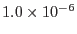

The example above would generate a dataset, with a threshold of . The matrix size may be reduced at the expense of accuracy by lowering the threshold as in the following example:
rmfgen spectrumset=spectrum.pha threshold=1e-5 format='var'